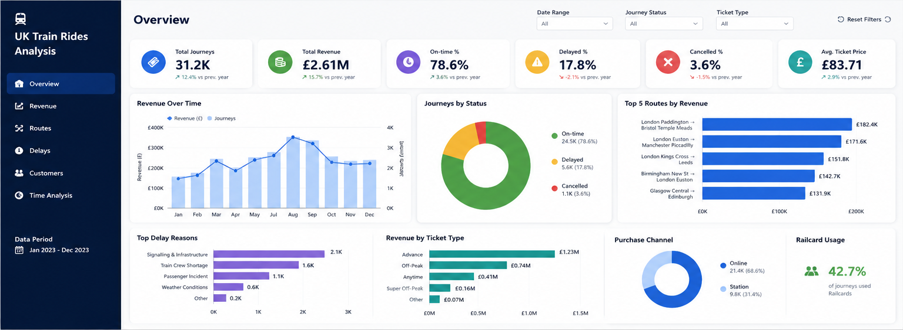

DASHBOARD PREVIEW
UK Train Rides Analysis
BUSINESS DATA ANALYSIS
UK Train Rides Analysis
Analysing railway journey data to uncover revenue trends, reliability issues and patterns across routes and customer travel.
ANALYSIS FOCUS
Identifying commercially important routes with reliability issues and highlighting areas for operational improvement.